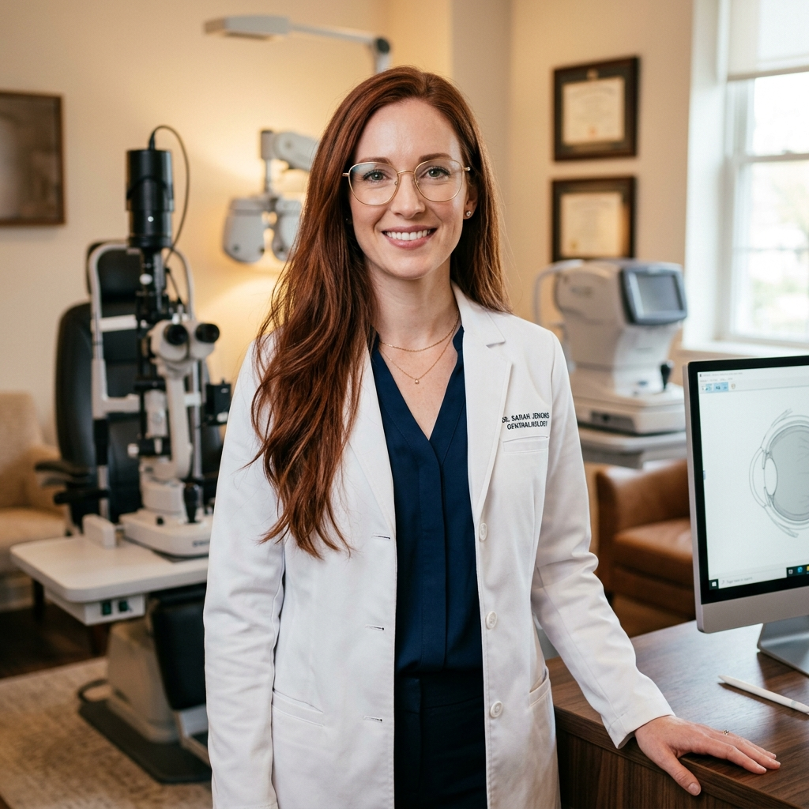
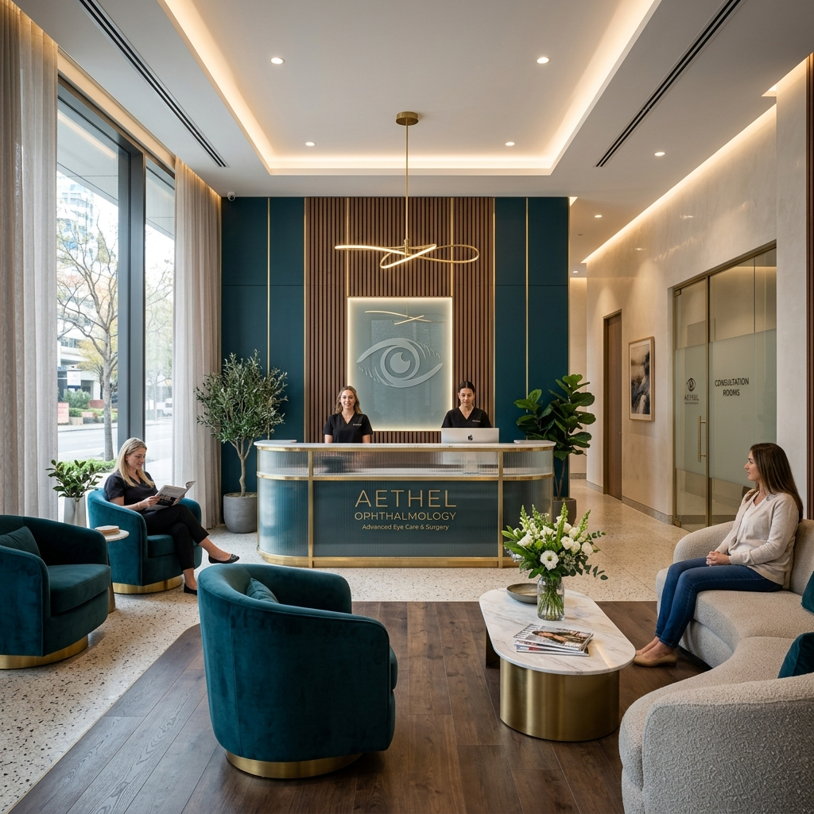
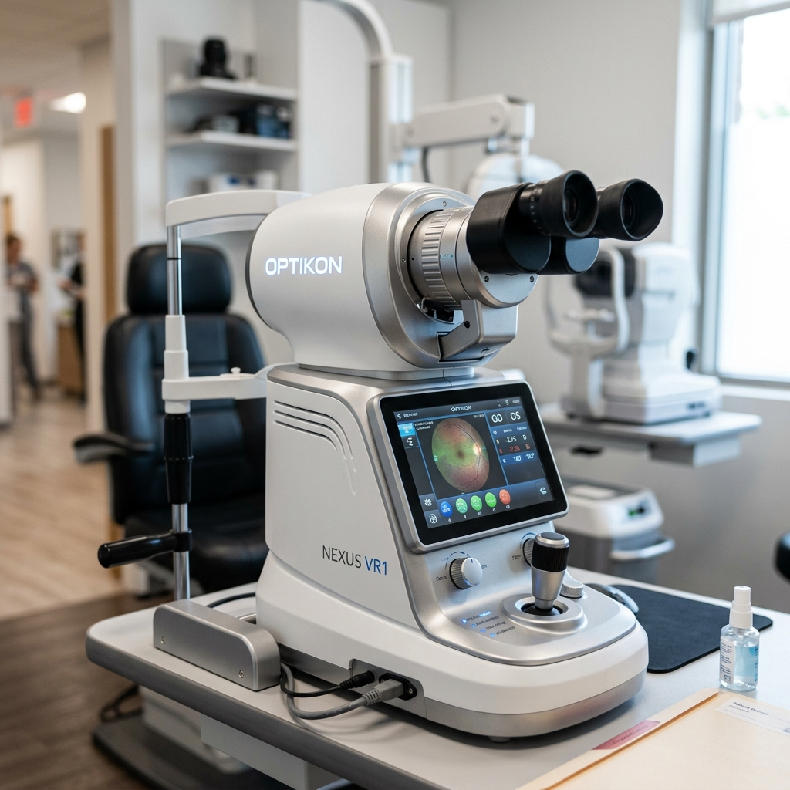

Com tecnologia avançada de diagnóstico e tratamentos cirúrgicos inovadores, proporcionamos um atendimento acolhedor focado na sua saúde ocular e na melhoria da sua qualidade de vida.


Sou a Dra. Maria Eduarda Tavares Brito, médica oftalmologista graduada e especializada por instituições de referência nacional. Acredito que a medicina oftalmológica deve unir a mais alta precisão científica a um atendimento profundamente humanizado.
Ao longo de mais de 15 anos de atuação, tenho me dedicado a devolver a qualidade de visão aos meus pacientes através de cirurgias modernas e tratamentos personalizados. Cada consulta é realizada com calma, dedicação e utilizando o que há de mais recente em tecnologia diagnóstica.
Graduação e Residência Médica em Oftalmologia na USP.
Especialização Avançada em Cirurgia Refrativa e Catarata.
Oferecemos tratamentos sob medida, desde consultas preventivas de rotina até procedimentos cirúrgicos altamente avançados.
Substituição do cristalino opaco por lentes intraoculares de alta tecnologia, restaurando a nitidez visual e reduzindo a dependência de óculos.
Saiba MaisCorreção definitiva de Miopia, Astigmatismo e Hipermetropia de forma rápida, segura e altamente precisa através de laser de última geração.
Saiba MaisAdaptação personalizada de lentes de contato rígidas, esclerais e gelatinosas para casos de Ceratocone, alto grau e córneas irregulares.
Saiba MaisMonitoramento preventivo de pressão ocular e campo visual, com terapias focadas em preservar o nervo óptico e evitar a perda de visão silenciosa.
Saiba MaisUso de técnicas inovadoras como Crosslinking corneal e implante de Anel de Ferrara para estabilizar a curvatura da córnea e resgatar a visão.
Saiba MaisAvaliação clínica minuciosa com mapeamento de retina, tonometria e exames de imagem de alta definição para diagnóstico precoce.
Saiba MaisPrecisa de um diagnóstico preciso para o seu caso?
Solicitar Agendamento no WhatsAppProjetamos nossa clínica para oferecer uma experiência confortável, acolhedora e segura, dispondo de equipamentos diagnósticos e terapêuticos de última geração mundial.

A maior recompensa pelo nosso trabalho é ver a felicidade e a melhoria da qualidade de vida de quem confia em nós.
Encontre respostas rápidas para as principais dúvidas sobre consultas e procedimentos.
Atendemos majoritariamente de forma particular para garantir um tempo estendido de consulta e exames de altíssima precisão. No entanto, fornecemos toda a documentação, relatórios e notas fiscais necessárias para que você solicite o reembolso integral ou parcial junto ao seu convênio médico de forma descomplicada. Nossa equipe oferece suporte completo nesse processo.
O agendamento ocorre após uma consulta detalhada e a realização de exames pré-operatórios específicos (como biometria e tomografia de coerência óptica). Uma vez indicada a cirurgia, nossa equipe organiza todos os trâmites, desde a escolha da lente intraocular premium ideal para o seu estilo de vida até o agendamento no hospital oftalmológico de referência.
Não, o procedimento é totalmente indolor. Antes de iniciar, são aplicadas gotas de colírio anestésico potente nos olhos do paciente. Durante a cirurgia (que dura em média de 10 a 15 minutos para ambos os olhos), o paciente sente apenas uma leve pressão. O pós-operatório imediato pode apresentar um leve desconforto ou sensação de areia nos olhos, controlados facilmente com os colírios recomendados.
Para adultos saudáveis, a recomendação geral é uma consulta preventiva anual. Para crianças em fase escolar, pacientes com histórico familiar de glaucoma ou cegueira, diabéticos, hipertensos e pessoas com mais de 40 anos, a frequência pode ser maior, conforme a orientação médica, para evitar o avanço de doenças silenciosas.
Pedimos que traga seus óculos de grau atuais (se utilizar), as embalagens de lentes de contato que costuma usar e receitas ou exames anteriores. Caso utilize colírios de uso contínuo, traga o nome ou a embalagem deles. Se sua consulta incluir dilatação da pupila, recomendamos trazer um acompanhante e óculos de sol, pois a visão pode ficar temporariamente embaçada e sensível à luz.
Nossa clínica está localizada em um dos principais polos médicos de São Paulo, projetada com acessibilidade total.
Av. Paulista, 1000 - Sala 1201 - Bela Vista, São Paulo - SP, 01310-100
(11) 99999-9999 / (11) 3456-7890
Segunda a Sexta: 08:00 às 19:00
Sábado: 08:00 às 13:00
contato@dramariaeduardabrito.com.br